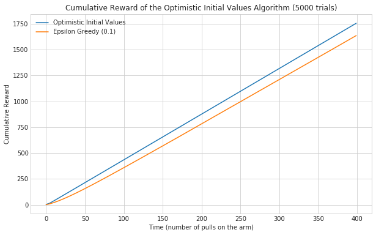

Reference: Reinforcement Learning
Sutton RS, Barto AG. Reinforcement learning: an introduction. Second edition. Cambridge, Massachusetts: The MIT Press; 2018. 526 p. (Adaptive computation and machine learning series).
Sutton RS, Barto AG. Reinforcement learning: an introduction. Second edition. Cambridge, Massachusetts: The MIT Press; 2018. 526 p. (Adaptive computation and machine learning series).
OpenAI Retro turns video game emulators into gym environments. This allows you to train a learner using video games from supported consoles (like the Atari 2600).
Instead of importing gym in this case you import retro.
# from pypi
import retro
It looks a lot like the way you run gym. First you make the environment and reset it.
environment = retro.make(game="Airstriker-Genesis", state="Level1")
observation = environment.reset()
You can see all the available games using retro.list_games().
for game in retro.list_games()[:5]:
print(game)
: BankHeist-Atari2600 : SuperThunderBlade-Genesis : DynamiteHeaddy-Genesis : GalaxyForceII-Genesis : SonicTheHedgehog-Genesis
To see the available initial states you use retro.list_states.
print(retro.list_states("Airstriker-Genesis"))
: ['Level1']
So in this case there's only one option for us.
As with the gym environments, with retro you sample the environment to get the next action and then pass it to the step method.
for step in range(1, 10**3):
environment.render()
action = environment.action_space.sample()
observation, reward, done, info = environment.step(action)
if done:
print("It took {} steps to finish this episode".format(step))
break
When you run it it will pop up a screen showing the game being played (sped up four times).

We need to import openai-gym (as gym).
# from pypi
import gym
You build the environment with gym.make. In this case we're going to use the BipedalWalker-v2, which the documentation describes like this:
Reward is given for moving forward, total 300+ points up to the far end. If the robot falls, it gets -100. Applying motor torque costs a small amount of points, more optimal agent will get better score. State consists of hull angle speed, angular velocity, horizontal speed, vertical speed, position of joints and joints angular speed, legs contact with ground, and 10 lidar rangefinder measurements. There's no coordinates in the state vector.
environment = gym.make("BipedalWalker-v2")
We're going to run this for 10 episodes (each run from start to finish is an episode), resetting the environment for each episode. Then within an episode we're going to have the environment run up to 1,000 steps (a time-step that updates the environment). If it falls down or walks off screen the environment will indicate that it's done.
EPISODES = range(10)
STEPS = 10**3 + 1
for episode in EPISODES:
observation = environment.reset()
for step in range(STEPS):
environment.render()
action = environment.action_space.sample()
observation, reward, done, info = environment.step(action)
if done:
print("It took {} steps to finish this episode.".format(step))
break
It only finished five out of the ten times, probably by falling down each time. Note that I didn't implement any logic to teach the robot to walk, this is all run with built-in functionality.
When you run it it will open a window so you can see what's happening.

This is take from MorvanZhou's github repository. It uses Q-learning to train an agent to explore a one-dimensional world that has the reward-state at the end of the world.
This is the no-web tangle block. It shows how the code is organized.
<<imports>>
<<constants>>
<<Q-Learner>>
<<episodes>>
<<terminal>>
<<q-environment>>
<<q-agent>>
<<q-call>>
<<environment>>
<<evaluate-action>>
<<update>>
<<goal-reached>>
<<reset>>
<<agent>>
<<q-table>>
<<action>>
<<act>>
<<main>>
The only non-python-standard library requirements are numpy and pandas.
# python standard library
import time
# from pypi
import numpy
import pandas
The Actions class holds the strings used for the choice of actions. I tend to change my mind about names so I made a central object to store the strings.
class Actions(object):
actions = ['Left', 'Right']
move_left = 'Left'
move_right = 'Right'
This is what will run the reinforcement learning.
class QLearner(object):
"""Runs the reinforcement learning
Args:
episodes: Number of time to repeat training
start_state (int): where to start the agent
states (int): total size for the environment
terminal (int): where the goal state is
"""
def __init__(self, episodes=15, start_state=0, states=6, terminal=None):
self._episodes = None
self.episodes = episodes
self.start_state = start_state
self.states = states
self._terminal = terminal
self._environment = None
self._agent = None
return
This is the goal state. If it isn't set then it will default to being the rightmost state.
@property
def terminal(self):
"""Goal state
Returns:
int: zero-based index of the goal-state
"""
if self._terminal is None:
self._terminal = self.states - 1
return self._terminal
An 'episode' is a single session that is run until the agent reaches the goal. To improve its performance, you can run it over multiple episodes so it can keep learning.
@property
def episodes(self):
"""the episodes iterator
Returns:
range: (1, episodes + 1)
"""
return self._episodes
@episodes.setter
def episodes(self, episode_count):
"""creates the episodes iterator
Args:
episode_count(int): number of episodes to train the agent
"""
self._episodes = range(1, episode_count + 1)
return
I couldn't decide who should build the agent and the environment so I had the Q-Learner do it.
@property
def environment(self):
"""The Environment for the agent
Returns:
Environment: one-dimensional environment
"""
if self._environment is None:
self._environment = Environment(self.start_state,
self.states,
self.terminal)
return self._environment
Since the Q-Learner is building the environment I'm going to make it build the Agent too.
@property
def agent(self):
"""The agent that explores the environment
Returns:
Agent: agent built for the environment
"""
if self._agent is None:
self._agent = Agent(self.environment)
return self._agent
This runs the episodes.
def __call__(self):
"""runs the episodes to train the agent in the environment
"""
for episode in self.episodes:
counter = 0
self.environment.reset()
self.environment.update(episode, counter)
while not self.environment.goal_reached:
self.agent.act()
counter += 1
self.environment.update(episode, counter)
return
This will hold the environment for the agent to explore.
class Environment(object):
"""The environment to explore
Args:
start_state(int): where the agent will start
states (int): the size of the world
terminal (int): where the target state is
output_pause (float): seconds to sleep after printing to the screen
"""
def __init__(self, start_state, states, terminal, output_pause=2):
self.start_state = start_state
self.state = start_state
self.next_state = start_state
self.states = states
self.terminal = terminal
self.output_pause = output_pause
return
This is used both to update the q-table and to decide whether to quit the episode. Because updating the q-table requires both the current and next states, it is based on the next state, with the assumption that it will be updated before the next episode
@property
def goal_reached(self):
"""Checks if the next-state is the goal
Returns:
bool: True if next-state is the goal
"""
return self.next_state == self.terminal
This will check if the action will lead to the goal and decide the reward to give for the action. It also sets the next_state property based on the current state and the chosen action.
def evaluate(self, action):
"""Checks if the action will lead to the goal
Args:
action (str): one of the actions to explore the environment
Returns:
int: 1 if this will lead to the goal, 0 otherwise
"""
if action == Actions.move_right:
self.next_state = self.state + 1
else:
self.next_state = max(self.state - 1, 0)
reward = 1 if self.next_state == self.terminal else 0
return reward
This prints out the environment for the user and updates the state.
def update(self, episode, step):
"""Emits the updated environment to the user
also sets the state to the next state
Args:
episode (int): what episode we're in
step (int): how long we've been running this episode
"""
environment = ['-'] * (self.states - 1) + ['T']
if self.goal_reached:
print("\nEpisode {}: Total Steps = {}".format(episode, step))
time.sleep(self.output_pause)
else:
environment[self.next_state] = 'O'
print("{}".format("".join(environment)))
self.state = self.next_state
return
This sets the current state and the next-state to the start state so the environment can be re-used in different episodes.
def reset(self):
"""Resets the states to the start state"""
self.state = self.start_state
self.next_state = self.start_state
return
This is the agent that will learn to find the reward.
class Agent(object):
"""This is the agent that will learn to find the treasure
Args:
environment: The environment to explore
exploitation_rate: Fraction of the time to exploit (epsilon)
discount_factor: Discount factor (gamma)
learning_rate: how much to change the reward (alpha)
"""
def __init__(self, environment, exploitation_rate=0.9, discount_factor=0.9,
learning_rate=0.1):
self.environment = environment
self.exploitation_rate = exploitation_rate
self.discount_factor = discount_factor
self.learning_rate = learning_rate
self._q_table = None
return
Other than the environment, these are the values the Agent needs:
exploitation_rate: What fraction of the time to use the best known action so far. Setting it to 0 means always use a random action, 1 means only use the best known action.discount_factor: The amount to discount the previously discovered reward. Setting it to less than 1 prevents infinite loops.learning_rate: How much to update the values in the table. 0 means don't update. 1 means use all of the new information.The agent learns by building a table of 'Quality' estimates for any action chosen for the current state. Each state is a row in the table and each column is a possible action that can be taken. Initially the table is set to all zeros.
@property
def q_table(self):
"""The Quality Estimate table
Each cell is the quality-estimate for a given state, action pair
Returns:
DataFrame: rows are states, columns are actions
"""
if self._q_table is None:
self._q_table = pandas.DataFrame(
numpy.zeros((self.environment.states, len(Actions.actions))),
columns=Actions.actions,
)
assert self.q_table.shape == (self.environment.states, len(Actions.actions))
return self._q_table
Generates an action based on the current state. This is using an epsilon-greedy algorithm so it will explore if the value is above a certain threshold, otherwise it will exploit the best solution so far. It also will explore if the state has never lead to reaching the goal. This was confusing at first, but the updated reward for the current state is calculated based on the next state that this action leads to, so as the episodes continue, the rewards will fill in from the goal-state back to the start state.
@property
def action(self):
"""Return the next chosen action
Returns:
str: the next action to take
"""
# get the row in the q-table matching the current state
state = self.q_table.iloc[self.environment.state, :]
# only explore if we generate a value over epsilon
# or none of the actions have a reward
if numpy.random.uniform() > self.exploitation_rate or state.all() == 0:
action = numpy.random.choice(Actions.actions)
else: # exploit
# get the column-name of the cell with the largest value
action = state.idxmax()
return action
This gets the next action to take, queries the environment for the reward (which also triggers storing the next state in the environment), then updates the q-table.
def act(self):
"""Updates the Q-table based on the reward from the last action"""
action = self.action
reward = self.environment.evaluate(action)
previous_quality = self.q_table.loc[self.environment.state, action]
if self.environment.goal_reached:
new_quality = reward
else:
new_quality = reward + self.discount_factor * self.q_table.iloc[self.environment.next_state, :].max()
self.q_table.loc[self.environment.state, action] += self.learning_rate * (new_quality - previous_quality)
return
Runs the simulation.
if __name__ == "__main__":
learner = QLearner(states=10)
learner()
print(learner.agent.q_table)
print("\nlearned-model with only exploitation set")
learner.agent.exploitation_rate = 1
learner.episodes = 1
learner()
This is the general optimization example from the pybrain documentation.
# python standard library from random import random # pypi from pybrain.structure.evolvables.evolvable import Evolvable from pybrain.optimization import HillClimber
To make an optimization that can take arbitrary values (not just continuous numbers), you can implement a sub-class of the PyBrain Evolvable class.
The Evolvable class doesn't implement a constructor so you can create one with any parameters you need.
This is the method that is called after each round to change the parameters a little (a tweak). It takes positional arguments, but I think it's called by the Hill Climber so I don't know where it gets passed in.
The tutorial says this is a required method, but the documentation for the API says it should default to a deep-copy. Anyway, I think this is only used if you use something like a Genetic Algorithm.
This is used to initialize the parameters to a random value. This is required but I'm pretty sure it doesn't get used in this case.
class Mutant(Evolvable): """A simple evolvable class Args: x: a starting value to mimic the fitness of the model mininmum: smallest allowed value maximum: biggest allowed value """ def __init__(self, x, minimum=0, maximum=10): self.minimum = minimum self.maximum = maximum # minimum <= x <= maximum self._x = None self.x = x return @property def x(self): """The value to optimize Returns: x (float): value to optimize """ return self._x @x.setter def x(self, new_x): """sets x, constraining the value Args: new_x: float from minimum to maximum """ self._x = max(self.minimum, min(new_x, self.maximum)) return def mutate(self): """Updates x with a random change Maintains the constraint of the value """ self.x += (random() - 0.3) return def copy(self): """Returns a new instance with the same x-value Returns: Mutant: copy of this instance """ return Mutant(self.x) def randomize(self): """A method to randomize the x-value""" self.x = self.maximum * random() return def __repr__(self): """String representation Returns: str: formatted version of x """ return "< {:.2f} (Maximized={})>".format(self.x, self.x == self.maximum)
The HillClimber is the simplest search - it assumes the first minima or maxima it finds is the global one. By default it tries to maximize the outcome. None of the arguments are required at instantiation, but in this case we're setting:
an evaluator: a callable that outputs how well the object to be evaluated did
an evaluable: the object to be evaluated in this case our Mutant
maxEvaluations: The maximum number of times the evaluable is evaluated
verbose: print each step
desiredEvaluation: the value that is good enough so the climber can stop
In this case we're just going to return the x value of the object.
def evaluator(mutant): return mutant.x
mutant = Mutant(random() * 10) climber = HillClimber(evaluator, mutant, maxEvaluations=50, verbose=True, desiredEvaluation=10)
The optimization classes get run using their learn methods.
outcome = climber.learn() print(outcome)
('Step:', 0, 'best:', 6.780765339892317)
('Step:', 1, 'best:', 6.780765339892317)
('Step:', 2, 'best:', 6.807553650921801)
('Step:', 3, 'best:', 7.282574697921699)
('Step:', 4, 'best:', 7.45592511459156)
('Step:', 5, 'best:', 7.533694376079802)
('Step:', 6, 'best:', 7.751507552794123)
('Step:', 7, 'best:', 8.184303418505593)
('Step:', 8, 'best:', 8.184303418505593)
('Step:', 9, 'best:', 8.224264996606221)
('Step:', 10, 'best:', 8.4835021736195)
('Step:', 11, 'best:', 9.153976071682798)
('Step:', 12, 'best:', 9.55795557780446)
('Step:', 13, 'best:', 10)
(< 10.00 (Maximized=True)>, 10)
It managed to find the maximum in 13 steps.
Since the Optimistic Initial Values agent can't use the Bernoulli Arm, I'm creating a version of the Epsilon Greedy Optimized that expects the arms to be the population-mean for their payouts and the pull_arm will return a set of normally-distributed around that mean.
<<optimized-imports>> <<spec>> <<find-first>> @jitclass(spec) class EpsilonGreedyNormal(object): """The Epsilon Greedy Algorithm With Normal Arm Args: epsilon (float): fraction of the time to explore arms (list): collection of probabilities for bandit arm """ <<optimized-constructor>> <<best-arm>> <<select-arm>> <<optimized-pull-arm>> <<optimized-update>> <<optimized-reset>> <<call>>
# pypi from numba import ( jit, jitclass, ) import numba import numpy
This is how you tell numba what attributes the class will have.
spec = [ ("epsilon", numba.double), ("arms", numba.double[:]), ("counts", numba.double[:]), ("rewards", numba.double[:]), ("total_reward", numba.int64), ]
The constructor takes two arguments - epsilon and arms. The arms list should contain the mean payout for each arm.
def __init__(self, epsilon, arms): self.epsilon = epsilon self.arms = arms self.counts = numpy.zeros(len(arms)) self.rewards = numpy.zeros(len(arms)) self.total_reward = 0 return
def reset(self): """sets the counts, rewards, total_reward to 0s This lets you re-used the EpsilonGreedy """ self.counts = numpy.zeros(len(self.arms)) self.rewards = numpy.zeros(len(self.arms)) self.total_reward = 0 return
The best_arm property returns the index of the arm that has the highest average reward so far. It returns the index instead of the arm itself because it's used to get the matching counts and rewards in the update method. Since I'm using the jitclass decorator I'm going to get rid of first_find.
@property def best_arm(self): """Index of the arm with the most reward""" item = self.rewards.max() for index in range(len(self.rewards)): if item == self.rewards[index]: return index return
This differs from the other Epsilon Greedy code only in that I'm using numpy instead of python for the random function.
def select_arm(self): """chooses the next arm to update Returns: int: index of the next arm to pull """ if numpy.random.random() < self.epsilon: return numpy.random.randint(len(self.arms)) return self.best_arm
Since we can't give user-defined objects as attributes of the class, this version will be both algorithm and bandit. This is what's different from the other Epsilon Greedy algorithms in that we're returning the arm's mean plus a random number from the normal distribution. If numba allowed us to pass in objects maybe we could have just switched out bandits. I need to look into how to make that work.
def pull_arm(self, arm): """gets the reward Args: arm (int): index for the arm-probability array Returns: float: reward """ return numpy.random.randn() + self.arms[arm]
The update method pulls the arm whose index it is given and then updates the count and reward. Here we're calling the pull_arm method instead of using a BernoulliArm so we can't re-use the original method.
def update(self, arm): """pulls the arm and updates the value Args: arm (int): index of the arm to pull """ self.counts[arm] += 1 count = self.counts[arm] average_reward = self.rewards[arm] reward = self.pull_arm(arm) self.total_reward += reward self.rewards[arm] = (((count - 1)/float(count)) * average_reward + (reward/float(count))) return
This is one possible to the n-armed bandit problem. It is similar to the Epsilon Greedy algorithm except that instead of using a conditional to decide whether to explore or exploit, the algorithm sets the estimated (mean) payout for each arm to 1 (the theoretical maximum for our case) and then always exploits. As things proceed, the arms will settle down to their actual payoff-rates and those that haven't been explored will be chosen because they are still too high.
This is the no-web template to build the final file.
<<imports>> <<spec>> <<class-declaration>> <<constructor>> <<select-arm>> <<pull-arm>> <<update-arm>> <<reset>>
These are our external dependencies.
from numba import jitclass import numba import numpy
In order to use numba with the OptimisticInitialValues class you have to create a 'spec' that tells numba what the data-types are for each of its fields.
SPEC = [ ("arms", numba.double[:]), ("counts", numba.double[:]), ("rewards", numba.double[:]), ("total_reward", numba.int64), ("initial_reward", numba.double), ]
@jitclass(SPEC) class OptimisticInitialValues(object): """Optimistic Initial Values greedy algorithm Args: numpy.array[float]: payout-probabilities for each arm """
Here's our first change from the epsilon-greedy algorithm. We no longer have an epsilon value and instead of initializing the rewards as zeros we initialize them with an 'initial' reward. Also, although you can't see it here, the arms have to be a list of mean payout values (see the pull_arm method below).
def __init__(self, arms, initial_reward): self.arms = arms self.counts = numpy.zeros(len(arms)) self.rewards = numpy.zeros(len(arms)) + initial_reward self.total_reward = 0 self.initial_reward = initial_reward return
This chooses the next arm. Unlike the epsilon-greedy algorithm it will always pick the 'best' arm, choosing the first if there is a tie. Since the whole class is in the jit I'm also not using the external find_first method.
def select_arm(self): """Index of the arm with the most reward Returns: integer: index of arm with highest average reward """ item = self.rewards.max() for index in range(len(self.rewards)): if item == self.rewards[index]: return index
This gets the reward for the arm. with a Bernoulli arm, there's a chance that an arm will be set to 0 on its first pull, at which point you will never explore it (since there's no exploration), so even the best arm might get wiped out. To fix this you need a different scheme. This one uses a population mean (selected from self.arms) which has noise added by selecting from the standard normal distribution.
def pull_arm(self, arm): """gets the reward Args: arm (int): index for the arm population-mean array Returns: float: payout for the arm """ return numpy.random.randn() + self.arms[arm]
This pulls the arm and updates the reward. This works the same as the epsilon-greedy version does.
def update(self, arm): """pulls the arm and updates the average reward also updates the total_reward the algorithm has earned so far Args: arm (int): index of the arm to pull """ self.counts[arm] += 1 count = self.counts[arm] average_reward = self.rewards[arm] reward = self.pull_arm(arm) self.total_reward += reward self.rewards[arm] = (((count - 1)/float(count)) * average_reward + (reward/float(count))) return
This resets the values so that you can re-use the algorithm. As with the constructor, it sets the rewards to all ones instead of zeros as was the case with the epsilon-greedy algorithm.
def reset(self): """sets the counts, rewards, total_reward to 0s This lets you re-used the EpsilonGreedy """ self.counts = numpy.zeros(len(self.arms)) self.rewards = numpy.zeros(len(self.arms)) + self.initial_reward self.total_reward = 0 return
As with the Epsilon-Greedy algorithm I'm going to use the Cumulative Reward as the metric. In this case we don't really have a parameter to tune.
The dependencies.
This will enable the plotting and set the style.
This will create a range where each arm only differs by 0.1
The Optimistic Initial Values agent does better than the Epsilon Greedy, as you would expect (since it eventually stops exploring). But it looks suspisciously linear.
Lets see how it goes when one arm dominates the payouts.

It looks like the optimistic agent does even better with one dominant arm. Likely because it found it quick enough that always exploiting it gives it a huge advantage over the epsilon greedy, which never stops exploring.

It looks like there was a brief period where the Epsilon Greedy did better, but the Optimistic agent settled in fairly quickly.
Contents
This is one of the ways to characterize the performance of the Epsilon Greedy agent using our Bernoulli Arm. We are going to look at three ways to evaluate how well the algorithm does.
probability of using the best arm
average reward
cumulative reward
This will enable the plotting and set the style.
This code will run generate the probabilities. Although I made it so that using the EpsilonGreedy call method would both choose the arm and update the reward, in this case we need to know which arm was selected so I'm going to do the steps individually.
Epsilon 0.05 Epsilon 0.10 Epsilon 0.20 Epsilon 0.30 Epsilon 0.40 \
count 400.000000 400.000000 400.000000 400.000000 400.000000
mean 8.784956 9.971200 9.801344 9.084844 8.235194
std 3.064916 2.523568 1.775677 1.319447 0.998305
min 0.120000 0.275000 0.495000 0.757500 1.050000
25% 7.141875 9.740000 10.264375 9.390000 8.409375
50% 9.937500 11.187500 10.456250 9.475000 8.480000
75% 11.225000 11.457500 10.515000 9.530625 8.545000
max 11.720000 11.605000 10.727500 9.665000 8.712500
Epsilon 0.50
count 400.000000
mean 7.310087
std 0.763259
min 1.190000
25% 7.406875
50% 7.473750
75% 7.535625
max 7.725000

Looking at the plots, it appears that the epsilons greater than 0.05 converge faster that 0.05 (their curves are steeper at the beginning), as you would expect, but they also don't do as well in the long run, as you might also expect, since they're doing more exploration. In the long run, the more exploitation, the better the profit, but I suppose it depends on the window you have to work with, if you have a short one, then the more aggresive explorers might be better. Anything less than 350 would do better with 0.1 rather than 0.05, for instance.
One of the things to note about the previous trials is that there was one arm that did notably better than all the others. When they are more uniform using the probability of retrieving the best arm might not be as revealing. Instead, using the average reward so far would give us more information.
Run Time: 0:01:08.727723

There's much more variablity and overlap here, as you might expect since I made the probabilities closer. Interestingly, the strongly exploratory agents seem to do worse, even from the beginning, while the more exploitative ones do better. Although it looks like 0.2 might be doing as well or better than 0.1 once you get over 100.
The previous two metrics turn out to be useful, but somewhat unfair to the aggresively exploring models, which we know won't ultimately do as well, but do have an advantage in the initial phase. To better qualify the overall effect of exploration versus exploitation, it's better to use a cumulative sum of the rewards.

Because of the randomness this will change everytime you run it, but we can see that in this case, the average cumulative reward was better for the 0.3 and 0.5 epsilon values than the more conservative values up until around 275, and the second most conservative case (0.2) actually did worse on average than the more exploratory cases did.
I'll re-run this again with more arms and a only one clear good arm to see if this changes things.

In this case, the most exploitive agent did much worse than the other agents. It looks like it didn't find the best arm until around the 240th pull. In this case, when most arms pay off poorly and one arm pays off much better, the exploratory arms accumulate more reward within our time frame. I'm guessing that the 0.10 epsilon would, given enough time, pull ahead, and you can in fact see that the most exploratory agent has already been surpassed by the 0.2 agent, so eventually exploration would probably take a back seat to exploitation, but not in this case. It's important to note, however, that if the most exploitive agent had happened to find the best arm at the start, he would likely have ended up the best, it's just the nature of randomization that you aren't guaranteed that this would be the case.
This is an implementation of one arm of a n-armed bandit to test the Epsilon Greedy algorithm. It takes a probability that it will return a reward. It also optionally let's you set the penalty and reward values, but defaults to a reward of 1 and a penalty of 0 (so it's really no reward more than a penalty).
# python standard library import random
The Bernoulli Arm will generate a value when its arm is pulled at a payout rate specified by the `probability` value.
<<imports>> class BernoulliArm(object): """A simulation of one arm of a multi-armed bandit Args: probability (float): probability of a reward reward (float): value to return on a win penalty (float): value to return on a loss """ <<constructor>> <<call>>
The constructor takes three values:
probability of winning
reward on winning
penalty on losing
Because of the way the problem is set up, the reward and penalty are already set at 1 and 0, but I didn't want there to be magic numbers so they can be changed if needed.
def __init__(self, probability, reward=1, penalty=0): self.probability = probability self.reward = reward self.penalty = penalty return
This is called pull in most cases, but I thought it would be more uniform to put it in a call.
def __call__(self): """pulls the arm and returns a reward or penalty Returns: float: value returned on pulling the arm """ if random.random() > self.probability: return self.penalty return self.reward